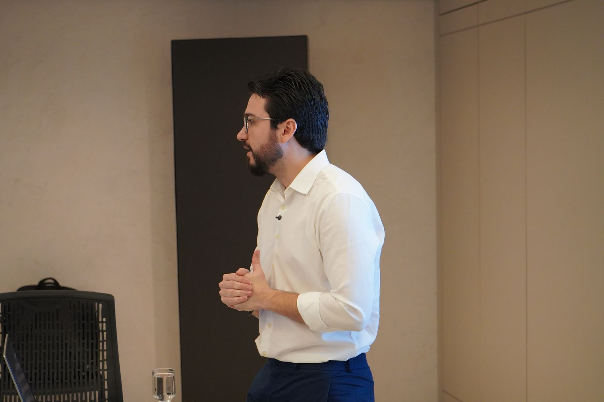
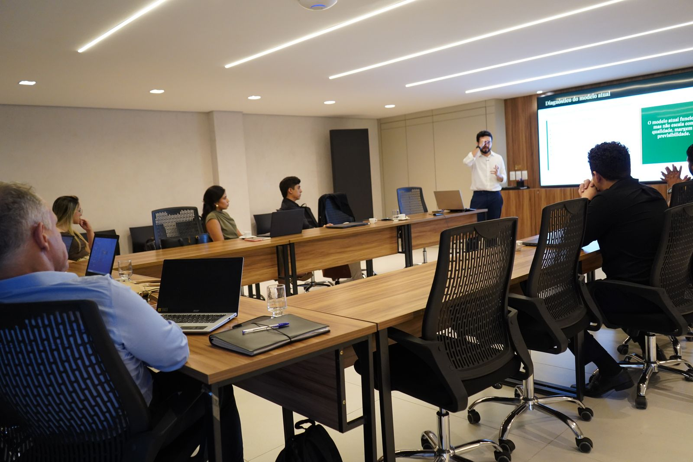

Etapa 1
Aprendizado
Aprender a gerir e colocar ordem no negócio.
Dores e necessidades
Preciso de noções básicas de gestão. Necessito entender o mínimo para operar. Time de gestores inexperiente e júnior, sem maturidade para tomar decisões.
Como trabalhamos
Não existe atalho para arrumar uma empresa. Existe método. O nosso foi construído ao longo de mais de 700 projetos.
O princípio
Cada projeto passa por quatro fases. Em todas elas, estamos ao seu lado: no escritório, na operação, na reunião com o time. Nada é entregue de longe.

Jornada do empresário
Cada etapa tem uma dor própria. Saber onde a empresa está é o que define por onde a consultoria começa.
Etapa 1
Aprender a gerir e colocar ordem no negócio.
Dores e necessidades
Preciso de noções básicas de gestão. Necessito entender o mínimo para operar. Time de gestores inexperiente e júnior, sem maturidade para tomar decisões.
Etapa 2
Transformar o negócio em uma empresa estruturada.
Dores e necessidades
Tenho vendas mas não tenho empresa organizada. Preciso definir papéis, processos e indicadores. Cresci rápido demais e perdi o controle.
Etapa 3
Extrair máxima performance e profissionalizar a gestão.
Dores e necessidades
Quero eficiência e governança. Preciso sair do operacional e atuar no estratégico. Como financiar meu crescimento?
Etapa 4
Preparar a empresa para capturar valor, atrair investidores, vender parcial ou totalmente o negócio e formar a próxima geração de gestão.
Dores e necessidades
Quero transformar o valor construído em oportunidade: atrair investidor, buscar sócio estratégico, conduzir um M&A ou preparar a segunda geração para assumir a empresa com mais governança, método e maturidade.
Entramos na sua empresa e levantamos números, processos e rotinas. Sem achismo: o que orienta o projeto é o que os dados e as pessoas mostram.
Onde tudo começaDefinimos juntos as prioridades. Cada ação entra no plano com prazo, meta e responsável. Você sabe exatamente o que vai acontecer e quando.
Prioridade e direçãoColocamos a mão na massa com o seu time, semana a semana. A quatro mãos, no cotidiano da empresa, fazendo acontecer.
Mão na massaMedimos o resultado, corrigimos a rota e seguimos até a meta. O projeto só termina quando o resultado aparece e se sustenta.
Até o resultadoNa prática
DRE, caixa e indicadores organizados. O achismo sai da mesa de decisão.
Reunião com pauta, meta acompanhada e responsável cobrado. Toda semana.
Processos desenhados e time treinado. A empresa anda sem travar em você.

Dúvidas comuns
Depende do tamanho do desafio e da frente contratada. Na primeira conversa, depois de entender o seu momento, apresentamos o escopo com prazo definido. Sem surpresa no meio do caminho.
Não. O trabalho acontece dentro da sua rotina. A gente se adapta à agenda da empresa e conduz as mudanças junto com o time, sem travar o dia a dia.
Faz. Já atendemos de pequenas empresas familiares a grupos com operação em vários estados. O método se ajusta ao tamanho do negócio, e o diagnóstico mostra por onde começar.
Resistência faz parte, e é por isso que trabalhamos a quatro mãos. O time participa da construção, entende o porquê de cada mudança e é treinado para sustentar o novo jeito de operar.
A empresa fica com o método: rotinas implantadas, indicadores rodando e time treinado. E seguimos à disposição para novos ciclos, como acompanhamento contínuo ou novas frentes.
Primeiro passo
Conta pra gente como está a sua empresa hoje. A primeira conversa é sem custo e sem compromisso.